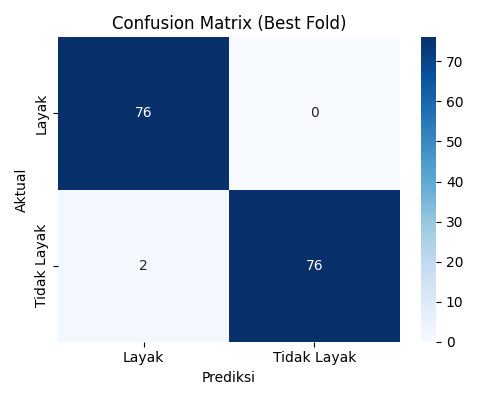
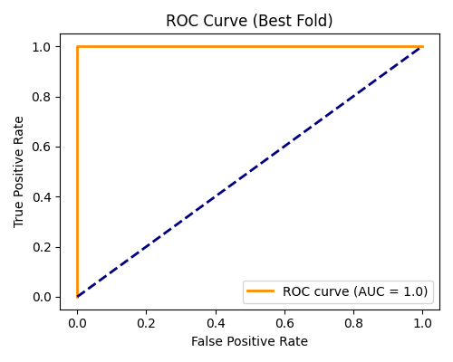

Informasi Model
Bagaimana Model Dibangun?
Model prediksi ini dikembangkan menggunakan **algoritma Machine Learning** untuk mengidentifikasi potensi kelayakan seseorang sebagai pendonor darah. Kami melatih model dengan dataset historis yang luas dari data pendonor darah, mencakup berbagai atribut kesehatan.
Proses pembangunannya meliputi:
- **Pengumpulan Data:** Mengumpulkan data anonim dari riwayat donor darah.
- **Pra-pemrosesan Data:** Membersihkan, menormalisasi, dan mengubah data agar sesuai untuk analisis model (misalnya, menangani nilai yang hilang, mengonversi data kategorikal).
- **Pemilihan Fitur:** Memilih variabel yang paling relevan yang berkontribusi pada keputusan donor.
- **Pelatihan Model:** Melatih algoritma Random Forest menggunakan data yang telah diproses untuk mempelajari pola yang membedakan pendonor yang layak dan tidak layak.
- **Evaluasi & Tuning:** Menguji kinerja model menggunakan metrik seperti akurasi, presisi, recall, F1-score, MCC, Kurva ROC AUC, kemudian menyempurnakan parameter untuk hasil terbaik.
Tujuan utama model ini adalah untuk memberikan indikasi awal kelayakan, membantu calon pendonor memahami persyaratan dasar.
Tabel Hasil K-Fold
| Iterasi | TP | FP | FN | TN | Accuracy | Precision | Recall | F1-Score | MCC |
|---|
Best Model Fold
| Iterasi | TP | FP | FN | TN | Accuracy | Precision | Recall | F1-Score | MCC |
|---|---|---|---|---|---|---|---|---|---|
| 2 | 76 | 0 | 2 | 76 | 0.9870 | 1.000 | 0.9744 | 0.9870 | 0.9744 |
Agregasi Rata-rata
| Accuracy | Precision | Recall | F1-Score | MCC |
|---|---|---|---|---|
| 0.9740 | 0.9668 | 0.9819 | 0.9741 | 0.9744 |
Confusion Matrix dan ROC Curve (Best Fold)

